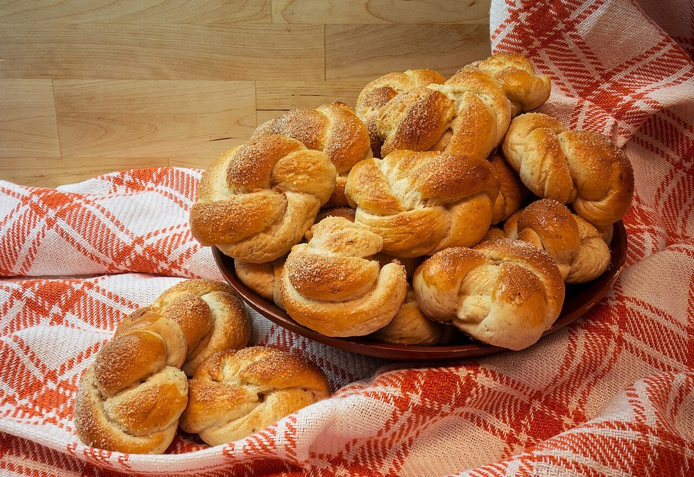
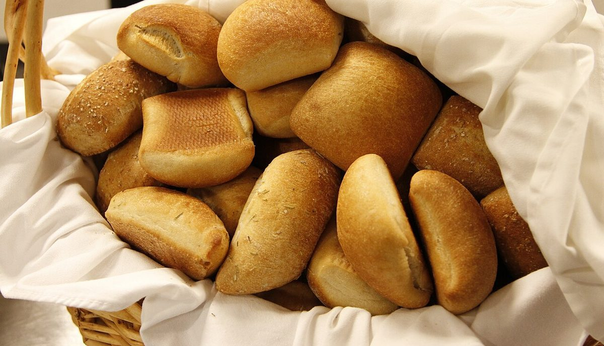

アネロ

制作側の連想
「輪」から、鍵輪に通した五枚札
「アネロ」はイタリア語で「輪・指輪」の意味だそうです。制作側はそこから、鍵束をまとめる金属の輪(キーリング)を連想し、このサイトを「一つの輪に通した五枚の札」として作りました。ページ上部の札がそれぞれのページです。お店の理念・由来とは無関係で、制作側の連想です。
パンのかたち(イメージ)
丸いもの、結んだもの、かごに入ったもの。
写真はフリー素材のイメージで、お店のパンではありません。「輪」のかたちを探して選びました。


